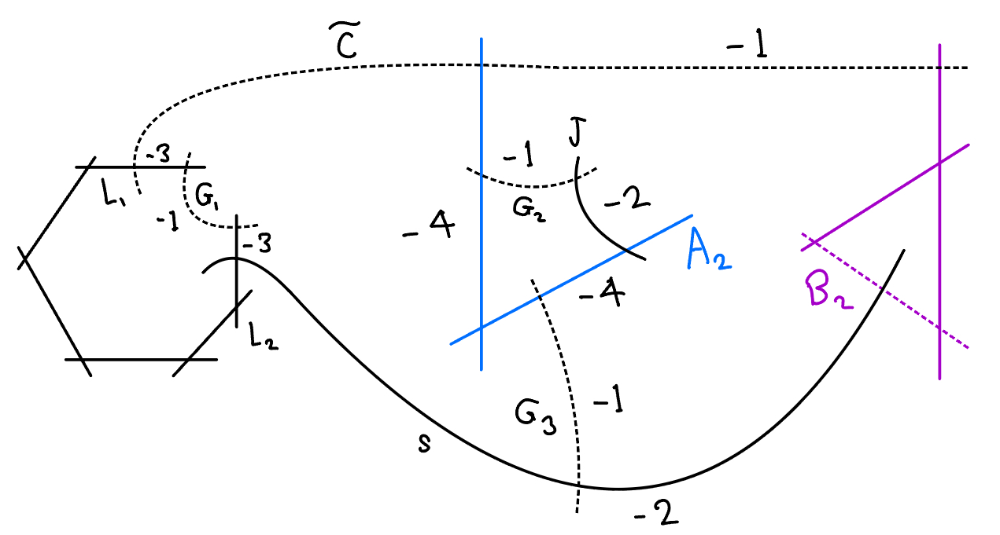
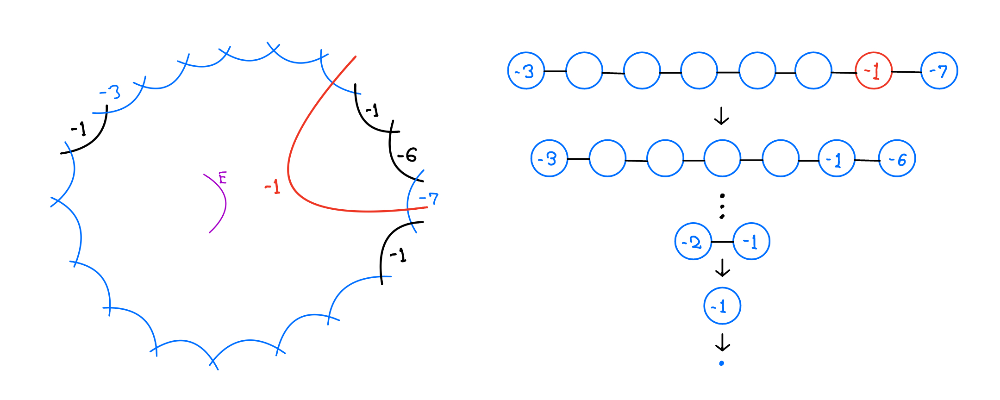

Papers
- A. Khurmi, A smoothing of a rational singularity with non finitely-generated canonical ring (Honors Thesis), 2025. [PDF]
Abstract
Let \(X\) be an isolated surface singularity with a one-parameter smoothing \(\mathcal{X}\). If the canonical algebra \(\mathcal{R}\) of \(\mathcal{X}\) is finitely generated (as an \(\mathcal{O}_{\mathcal{X}}\)-algebra), it can be used to define a small modification \(\mathcal{Y} := \text{Proj }\mathcal{R}\) of \(\mathcal{X}\) such that \(K_{\mathcal{Y}}\) is \(\mathbb{Q}\)-Cartier. This is used in the construction of flips in the minimal model program. As discovered by Kollár–Shepherd-Barron in 1988, the finite generation holds when \(X\) is a quotient singularity. The strict transform of \(X\) is a so-called \(P\)-resolution, and all such can be determined combinatorially. They proved that \(\mathbb{Q}\)-Gorenstein deformations of these \(P\)-resolutions describe the components of the versal deformation space of \(X\). János Kollár conjectured that an analogous result holds when \(X\) is a rational singularity. In this paper, I will describe an approach, inspired by a paper of Cutkosky, to disprove the conjecture by constructing a smoothing with non-finitely generated canonical algebra, assuming a hypothesis we expect to be true.
 - A. Khurmi, Toric Elliptic Pairs with Picard Number Three, 2024. [PDF]
Abstract
An elliptic pair \((X, C)\) is a generalization of a rational elliptic fibration \(X \to \mathbb{P}^1\) with fiber \(C\), introduced by Castravet-Laface-Tevelev-Ugaglia. Here, \(X\) is a projective rational surface with log terminal singularities, and \(C\) is an irreducible curve contained in the smooth locus of \(X\), with \(p_a(C)=1\) and \(C^2=0\). These naturally arise as blowups \(X := \mathrm{Bl}_e(\mathbb{P}_\Delta)\) of projective toric surfaces, whose Newton polygon is elliptic. The order of \(\mathcal{O}(C)|_C\) in \(\mathrm{Pic}^0(C)\) gives a quantitative way to check if \(X\) is an elliptic fibration, which is equivalent to finiteness of the order. We call \(\Delta\) a Lang–Trotter polygon when this order is infinite, in which case \(\overline{\text{Eff}(\mathrm{Bl}_e(\mathbb{P}_\Delta))}\) is non-polyhedral. Results of Pratt shows there are exactly \(3\) elliptic triangles up to \(\mathrm{SL}_2(\mathbb{Z})\), none of which is Lang–Trotter. The same paper by CLTU gives an infinite family of Lang–Trotter pentagons and heptagons, and various examples of other polygons when \(\rho(\mathbb{P}_\Delta) > 2\). Remark 4.7 in the paper asks if any Lang–Trotter quadrilaterals exist, and we answer this in the negative by studying the curves in the Zariski decomposition of \(K_X + C\).
